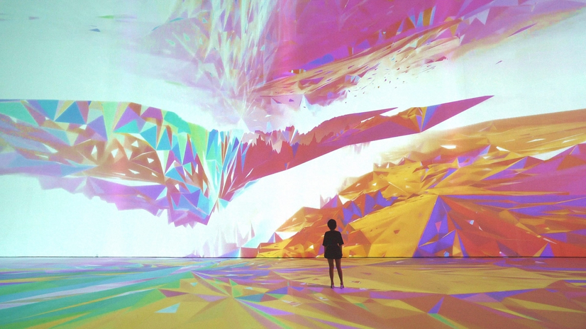

genereal idea
Digital art is an artistic work or practice that uses digital technology as part of the creative or presentation process. Since the 1960s, various names have been used to describe the process, including computer art and multimedia art.[1] Digital art is itself placed under the larger umbrella term new media art
there are many types of digital arts includind :
pixel art
Pixel art is a form of digital art, created through the use of software, where images are edited on the pixel level. The aesthetic for this kind of graphics comes from 8-bit and 16-bit computers and video game consoles, in addition to other limited systems such as graphing calculators. In most pixel art, the color palette used is extremely limited in size, with some pixel art using only two colors. Creating or modifying pixel art characters or objects for video games is sometimes called spriting, a term that arose from the hobbyist community. The term likely came from the term sprite, a term used in computer graphics to describe a two-dimensional bitmap that is used in tandem with other bitmaps to construct a larger scene
- pixel art can be simple like this:
-
or it can be detailed and complicated like this:
3d art
3D computer graphics, or three-dimensional computer graphics (in contrast to 2D computer graphics), are graphics that use a three-dimensional representation of geometric data (often Cartesian) that is stored in the computer for the purposes of performing calculations and rendering 2D images. The resulting images may be stored for viewing later (possibly as an animation) or displayed in real time. Unlike 3D film and similar techniques, the result is two-dimensional, without the illusion of being solid.
- 3d art can be low poly like this:
- or it can be highly comlicated realistic like this :